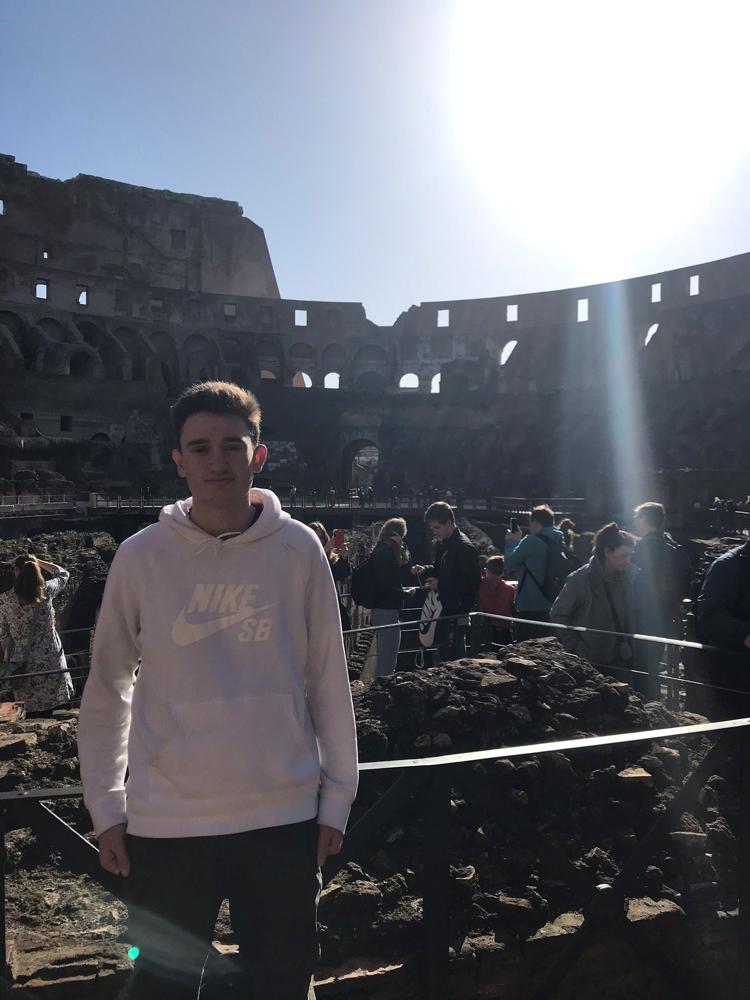
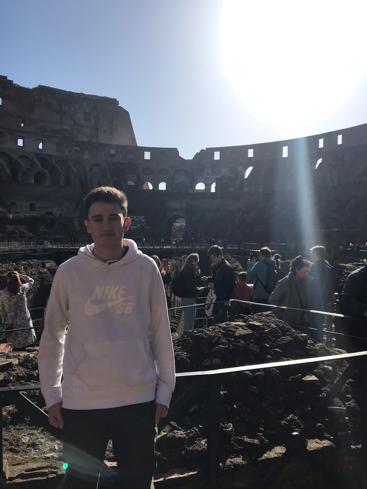

Calvin is currently a student at both Fleming College and Trent University where he is completing a degree in Geography via Trent while obtaining a certificate for GIS Cartography at Fleming College.
Calvin is from a small town known as Baddeck in Nova Scotia, yet, he has lived in the Kawarthas of Ontario for just over a decade. His childhood revolved heavily around sports. However, he has always had a strong passion for geography and was first interested in maps at a very young age.
Unaware of the GIS programs, Calvin figured his interest in geography would likely not end up with a supportable career. He started post-secondary schooling in Geology which did not last long. He started geology at Trent University but soon became aware of the GIS program that they offered with Fleming College, this changed Calvin's goals and ambitions.
Before Calvin was aware of the program he had already had many milestones and groundbreaking events in life that has influenced his teamworking and collaborative skills. Calvin participated in an Outdoor Leadership Program in 2017 where he realized he wanted to find a career that related to the environment in some way.
Shortly after finishing secondary school, Calvin did a large amount of traveling in Europe, this is where he found out he wanted to connect his education and future career to the world through geography.
Once Calvin started attending Trent University he knew that it would be to his advantage to join a club or sports team to get a close connection with some peers and potentially some of the Education Staff. Calvin successfully tried out for the Trent golf team and became one of several members for his first two years of attending the school.
Throughout Calvin's teenage life, he has done many things that have emphasized his effort to maximize his teamworking skills, self-motivation and dedication, and surely independent work making him a great worker in all types of environments.
You can reach Calvin via his LinkedIn account or his Twitter profile at the following links!

 
